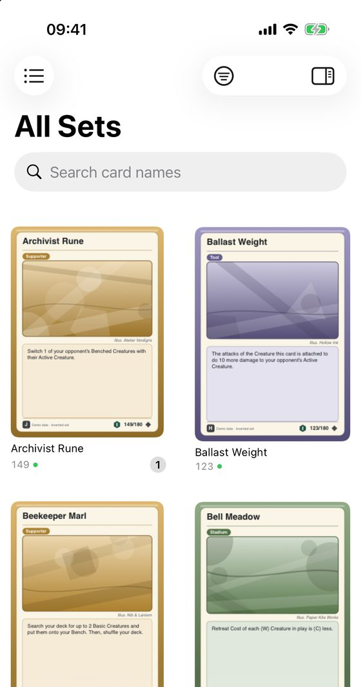
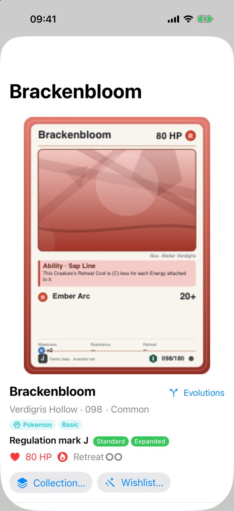
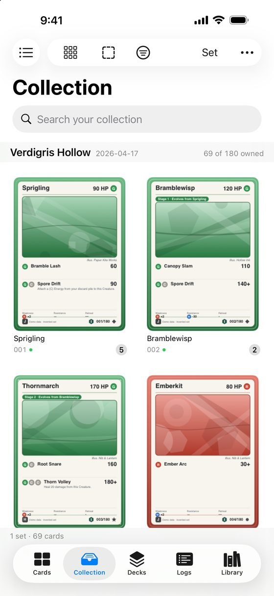

Find cards
The Cards screen shows every card in the sets you added. It is a catalogue: it shows all cards, whether you own them or not.
Browse by set
- iPhone: the screen opens on All Sets. Tap the list button at the top left to choose one set.
- iPad and Mac: the sets are listed in a column next to the cards. Pick All Sets or a single set.


Search
- Type in the search field. By default it searches card names.
- To search the text of attacks and abilities too, turn on Search Card Text in the filter menu.
- To clear what you narrowed down, tap Clear Filters.
The filter button (a circle with lines) opens the filter and sort options. ⌘F jumps to the search field on a Mac or an iPad with a keyboard.
Open a card
Tap a card. You see its picture, set, number, rarity, attacks, abilities and its legality. A small count on a card in the grid is how many copies you own.
- Collection… opens the sheet where you record your copies. See Record the cards you own.
- Wishlist… adds the card to a wishlist. See Wishlists.
- Evolutions shows the card's evolution line, or all printings of a trainer or energy card.
- Tap the picture to see it large. On a Mac you can also select a card and press Space.
Do I already own this card?
Look at the count on the card in the grid, or open the card and read how many you own. The Collection screen lists only the cards you own, and says how far along each set is, for example 69 of 180 owned.

Cards marked "Set not added"
If a card in your collection or in a deck says Set not added, its set is not on this device. Add it in Manage Sets and the card gets its picture and details back.
Next: Record the cards you own